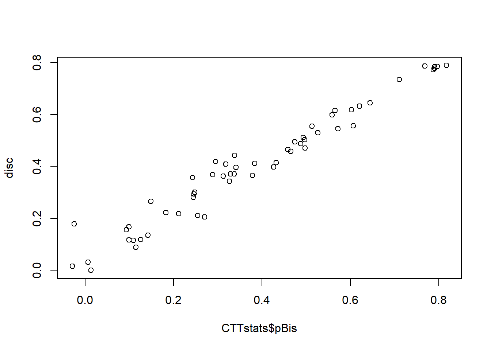
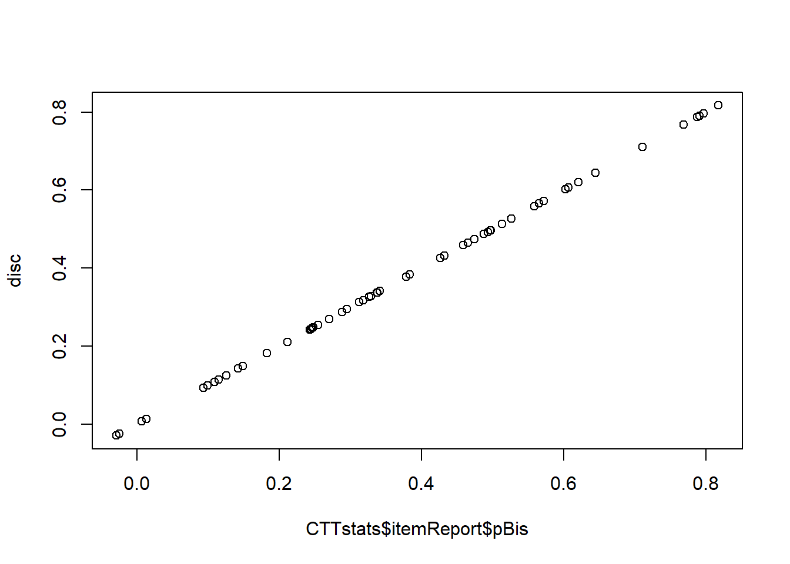

This Rmarkdown document is an extension of the exercise in week 1. It includes the use of the CTT package for calculation of item discrimination and reliability. This was the recommended code for class
# Week 1
# Calculate item discrimination and item difficulty.
resp <- read.csv(here::here("01-CTT", "Bscored.csv"), stringsAsFactors = FALSE)
score <- apply(resp, 1, sum, na.rm = TRUE)
itemdiff <- apply(resp, 2, mean, na.rm = TRUE) / apply(resp, 2, max, na.rm = TRUE)
disc <- apply(resp, 2, function(x) { cor(x, score - x, use = "complete.obs")})
# Week 2
# Use the CTT package to calculate reliability (and other things)
library(CTT)
CTTstats <- CTT::reliability(resp)## You will find additional options and better formatting using itemAnalysis().## Warning in log(pTauDif): NaNs produced
## Warning in log(pTauDif): NaNs produced
## Warning in log(pTauDif): NaNs producedplot(CTTstats$pBis, disc)
The code above works but use of CTT::reliability(resp) gave us some messages. It is suggested we might be better off using CTT::itemAnalysis() instead. Side note: the CTT:: prefix tells us that the itemAnalysis() function we want to use is the one from the CTT (this is not mandatory but can be useful if you are using packages containing the same function names). So let’s try updating our CTTstats object using that instead.
CTTstats <- CTT::itemAnalysis(resp)Also notice our estimates of item discrimination in disc when plotted against CTTstats$pBis don’t match up as nicely as we might expect. Hmmmmm - why?? Let’s take a look at the CTT::reliability code to see how it works:
CTT::reliability # note there is no use of brackets here## function (items, itemal = TRUE, NA.Delete = TRUE, ml = TRUE)
## {
## message("You will find additional options and better formatting using itemAnalysis().")
## if (!all(apply(items, c(1, 2), is.numeric))) {
## items <- apply(items, c(1, 2), as.numeric)
## warning("Data is not numeric. Data has been coerced to be numeric.")
## }
## if (NA.Delete == FALSE) {
## items[is.na(items)] <- 0
## warning("Missing values or NA values are converted to zeros.")
## }
## items <- na.omit(items)
## s <- apply(items, 2, var)
## N <- ncol(items)
## X <- rowSums(items)
## alpha <- (N/(N - 1)) * (1 - sum(s)/var(X))
## if (itemal) {
## alphad <- array(dim = N)
## pbis <- array(dim = N)
## bis <- array(dim = N)
## thisMl = ml
## rm(ml)
## for (i in 1:N) {
## Xd <- rowSums(items[, -i])
## pvalu <- colMeans(items)
## alphad[i] <- ((N - 1)/(N - 2)) * (1 - sum(s[-i])/var(Xd))
## pbis[i] <- cor(items[, i], Xd)
## bis[i] <- polyserial(Xd, items[, i], ml = thisMl)
## out <- list(nItem = N, nPerson = nrow(items), alpha = alpha,
## scaleMean = mean(X), scaleSD = sd(X), alphaIfDeleted = alphad,
## pBis = pbis, bis = bis, itemMean = pvalu)
## }
## }
## else out <- list(nItem = N, nPerson = nrow(items), alpha = alpha,
## scaleMean = mean(X), scaleSD = sd(X))
## class(out) <- "reliability"
## out
## }
## <bytecode: 0x000000001d6cf138>
## <environment: namespace:CTT>One thing to notice is the use of na.omit which removes cases which have missing values. If we do na.omit(resp) we have 247 rows. But the scores we calculated in score contains 278 scores of which there are 0 missing values.
score <- apply(resp, 1, sum) # na.rm is now default (FALSE)
disc <- apply(resp, 2, function(x) { cor(x, score - x, use = "complete.obs")})score now contains 278 scores of which there are 31 missing values. Let’s compare our results again.
plot(CTTstats$itemReport$pBis, disc) 
Note that we now need to use CTTstats$itemReport$pBis instead of CTTstats$pBis as the itemAnalysis() function has changed the way results are stored. Reliability for the test was 0.93.